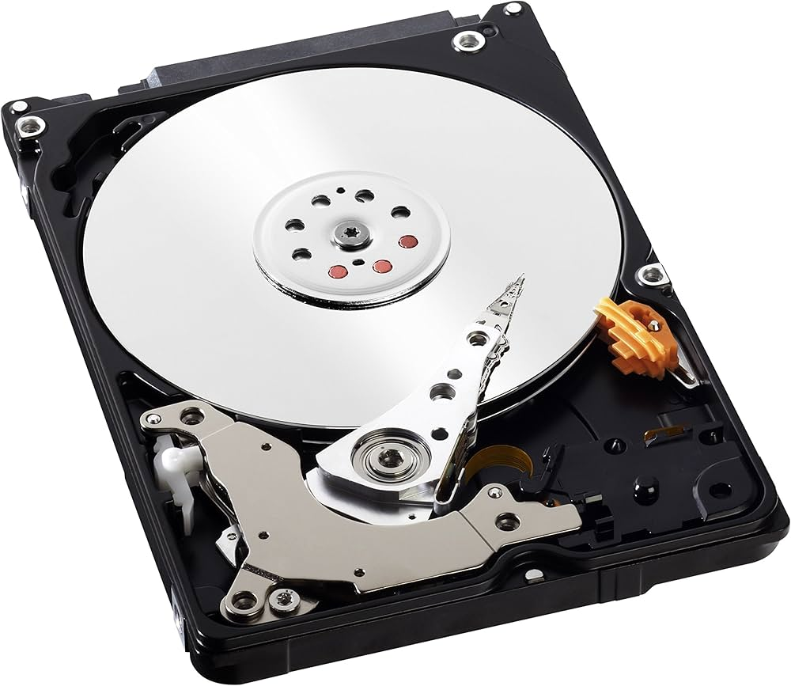

Er bestaan twee typen digitale afbeeldingen: bitmap en vector. Een goed voorbeeld van een bitmap is een foto. Bij vector kan je een tekening als goed voorbeeld gebruiken. Bij vectorafbeeldingen is het zo dat ze uit lijnen en curven bestaan. Deze lijnen en curven worden gedefinineerd door wiskundige algoritmen. Met bitmap is het zo dat ze bestaan uit een raster van pixels. Bitmapafbeeldingen worden opgeslagen met gebruik van een raster dat bestaan uit verschillende gekleurde vierkanten. Deze worden pixels genoemd. Vector graphics worden opgeslagen als een lijst met atributen.
Bij beeld is het zo dat het wordt opgeslagen door middel van een harde schijf. Deze harde schijf zit vaak ingebouwd in de recorder van een camerasysteem. De recorder is vaak vrij plat. Het ligt eraan hoeveel beelden je wilt opslaan. Soms kunnen er meerdere harde schijven in recorders geplaatst worden. CD's, DVD's en harde schijven worden gebruikt om digitaal geluid op te slaan. Hier zijn verschillende technieken voor. De simpelste is gewoon opslaan wat er is opgenomen. Daarbij wordt alle informatie gewonnen uit het samplen van een geluidssignaal gewoon opgeslagen. Een andere techniek voor het bewaren van geluid is dat audiosignalen worden omgezet in een reeks pulsen. Deze pulsen komen overeen met patronen van binaire cijfers en wordt zo vastgelegd op het oppervlak van een magneetband of optische schijf.
^Harde schijf^